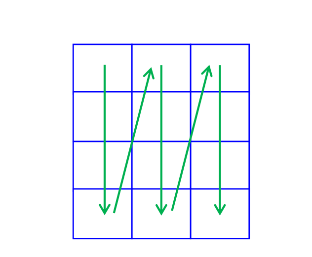
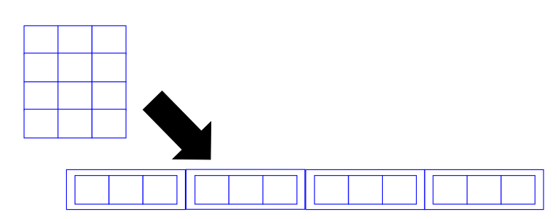

Programação Estruturada
UFABC
2026-10-06
Como declarar uma matriz:
Acessando valores em uma matriz:
Lendo/imprimindo um elemento da matriz:
Assim como em vetores, os indices das linhas e colunas da matriz começam de 0.
Qual o conteúdo da matriz após a execução do seguinte programa?
Como fazemos o código para percorrer uma matriz uma coluna por vez?

Internamente, a matriz é um vetor (unidimensional)
Cada elemento é outro vetor (unidimensional).

m[i][j] é armazenado?Em C, uma matriz é armazenada linha por linha na memória de forma contígua.
A matriz int m[3][4] 3 linhas e 4 colunas.
Para acessar m[i][j], C precisa calcular a posição no “vetorzão”:
Aplicar função que retorna soma dos valores de um vetor linha a linha de uma matriz.
#include <stdio.h>
int main() {
int m[3][4] = { {3,4,5,5}, {1,3,6,5}, {8,1,2,5} };
int i;
for (i = 0; i < 3; i++)
printf("%d\n", soma_vetor(m[i], 4));
return 0;
}Cada uma das linhas da matriz é um vetor!
Para passar uma matriz como parâmetro, é necessário especificar ao menos a segunda dimensão.
Impossível calcular posição no “vetorzão” caso contrário!
É possível especificar as duas dimensões também.
Criar uma função que recebe uma matriz e aplica a função de soma de valores de linha que acabamos de implementar.
A função retornará a soma de todos os elementos.
Slides originais: Prof. Paulo Henrique Pisani, Strings e Matrizes, Programação Estruturada, UFABC, setembro/2021.